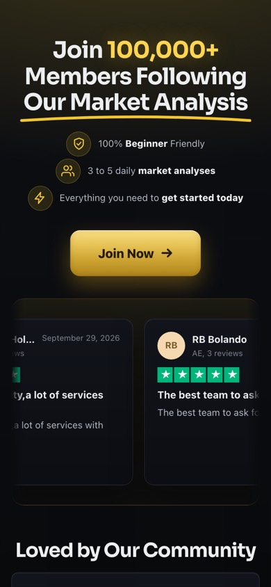
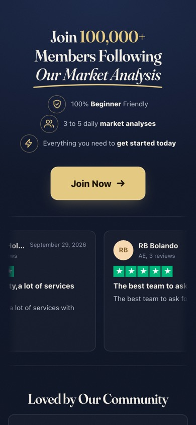
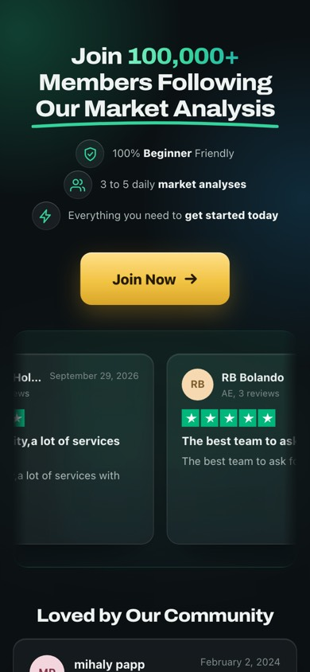
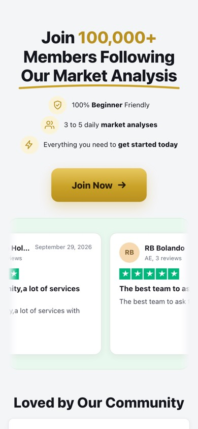

Mismo texto, mismas reseñas y mismos botones que en vivo; solo cambia el aspecto. Toca una para abrirla entera.




Código: commit cbd0aea6 de proyectos-claude (landing-ws-2/oscuro). Vista previa aislada: no toca la web.